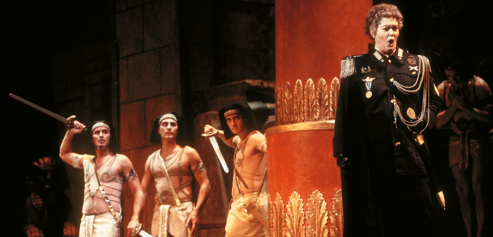

Ópera
Observa la siguiente imagen. ¿De qué tipo de obra musical se trata?

Es evidente que se trata de una escena teatral ambientada en una época antigua, en la que suena música y están cantando. La imagen pertenece a una escena de ópera, concretamente a Julio César, de Haendel.
| La ópera es un importantísimo género de la música vocal que nace en este periodo, y podemos definirla como una obra de teatro musicalizada. Se considera que la primera ópera de la historia es la obra Orfeo, del compositor Claudio Monteverdi, estrenada en 1607 y basada en el mito griego de Orfeo y Eurídice. |
La estructura de una ópera barroca se compone principalmente de:
- Obertura: pieza instrumental inicial que avisa al público del comienzo de la función.
- Recitativo: secciones declamadas donde los cantantes imitan el ritmo natural del habla para avanzar la trama.
- Arias: el corazón lírico y emocional de la obra. Detienen la acción dramática para que el solista exprese sus sentimientos más profundos con gran despliegue de virtuosismo.
- Coros: piezas donde interviene la masa coral para representar a personajes colectivos (como el pueblo o los soldados).
- Interludios: piezas instrumentales que permitían cambios de escena o danzas.
ESCUCHAMOS PERO NO JUZGAMOS: ÓPERA
Escucha los siguientes fragmentos de dos óperas: La Serva Padrona de Pergolesi y Julio César en Egipto de Handel y responde a estas dos preguntas por cada audición.
- ¿Qué tipo de pieza de las que hemos visto crees que es cada una?
- ¿Qué características te han ayudado a identificarla?
Audición 3
Audición 4
Audición 5
Haendel - Julio César en Egipto
Audición 6